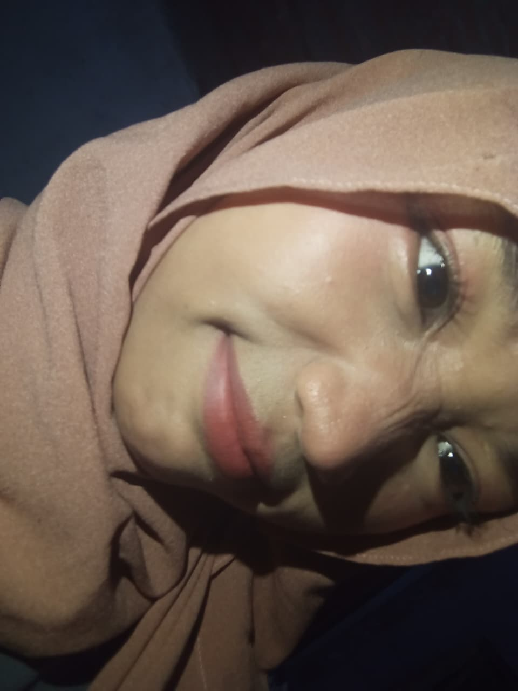

likes: Music, Reading, Sleeping
dislikes: Horror, Math
16 y/o • Scorpio
26 Oktobro 2009

Hai, kenalin nama saya Oktaviani Putri Kriswantoro. Saya lahir di Jawa Tengah, Indonesia, dan saat ini tinggal di Semarang Utara, yang juga dikenal sebagai bagian dari ibu kota Jawa Tengah. Saya lahir pada hari Senin, 26 Oktober. Sekarang saya berusia 16 tahun, dan di bulan Oktober nanti saya akan menginjak usia 17 tahun.
Saya memiliki tinggi badan 156 cm dengan berat badan 50 kg. Dalam keseharian, saya punya banyak hal yang saya sukai. Dulu saya cukup sering membaca buku, meskipun sekarang sudah mulai jarang karena keterbatasan waktu. Namun, saya tetap menyalurkan pikiran dan perasaan saya dengan menulis biasanya tentang keresahan atau hal-hal yang saya rasakan, yang saya tuangkan di catatan ponsel saya.
Kalau soal makanan dan minuman, saya sebenarnya menyukai banyak hal. Tapi jika harus memilih, saya lebih condong ke minuman karena terasa lebih menyegarkan. Minuman favorit saya cukup sederhana es teh. Rasanya basic, tapi selalu jadi pilihan yang tidak pernah salah. Untuk makanan, saya sangat menyukai bakso, walaupun tentu saja kalau dimakan terus-menerus tetap bisa menimbulkan rasa bosan.
Hobi saya juga cukup beragam. Selain membaca, saya suka mengedit foto ketika sedang tidak merasa malas. Namun, yang paling penting dalam hidup saya adalah mendengarkan musik. Rasanya, tanpa musik, hidup saya akan terasa sangat sunyi.
Dari segi kepribadian, saya berzodiak Scorpio, meskipun jujur saja saya merasa tidak terlalu cocok dengan karakter yang sering dikaitkan dengan zodiak tersebut. Saya juga memiliki tipe kepribadian INFP-T, yang sudah lama tidak berubah. Kadang saya berharap bisa menjadi seorang ekstrover, tetapi sepertinya itu sulit, karena energi saya lebih cepat habis ketika harus banyak berinteraksi dengan orang lain.